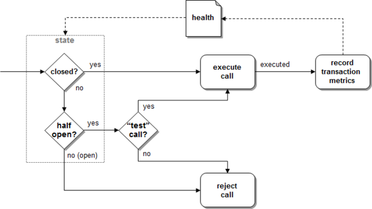

Hystrix
Un circuit breaker ?
“Un dispositif de protection dont la fonction est d'interrompre le courant en cas d'incident sur un circuit. Il est capable d'interrompre et de surveiller un courant dans une installation. Sa principale caractéristique est qu'il est réarmable et de ne subir aucune avarie lors de son fonctionnement.“
Que gère-t'il ?
- La vie du circuit
- Une réponse temporaire
- La protection du système
Comment ca fonctionne ?
Le cycle de vie d'un circuit :
Création d'un circuit
@HystrixCommand(
commandKey = String, => Default : function name
groupKey = String, => Default : class name
threadPoolKey = String, => Default : groupKey
fallbackMethod = String
)
La fenêtre de temps pendant laquelle Hystrix calcule le pourcentage d’appel en échec pour
ouvrir ou pas le circuit.
Les statistiques sont remises à zéro à chaque début de cette fenêtre.
Le temps après lequel Hystrix n’attend plus la réponse.
default 1000le nombre minimum de requètes à partir duquel Hystrix peut ouvrir le circuit
default 20La durée d'ouverture du circuit durant lequel Hystrix n'appel plus la ressource externe.
default 5000Le pourcentage d'appels en erreur VS en succès.
default 50Le cycle de vie de hystrix :